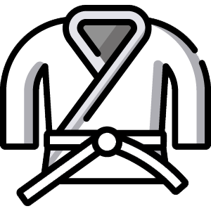
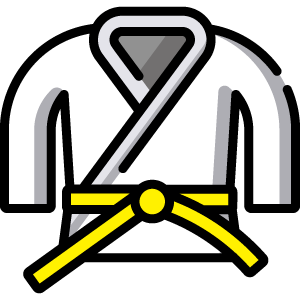
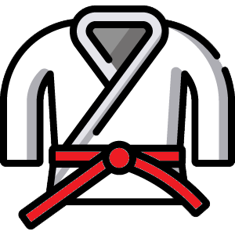
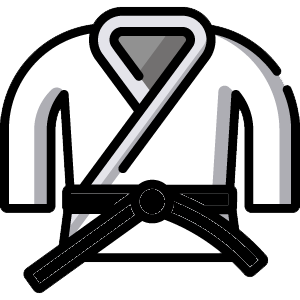

-
Espirito
Iniciante 7° kyu
3 meses ou 48h -
Paciência
4 meses ou 48h
-
Motivação
5 meses ou 60h
-
Vontade
6 meses ou 72h
-
Perseverança
9 meses ou 108h
-
Responsabilidade
12 meses ou 144h
-
Disciplina
12 meses
-
Respeito
24 meses